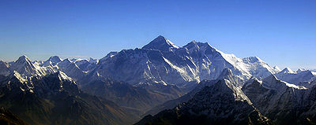

Mount Everest

Mount Everest - also called Qomolangma Peak- is the highest mountain on Earth, and the highest point on the Earth's continental crust, as measured by the height above sea level of its summit, 8,848 metres (29,029 ft). The mountain, which is part of the Himalaya range in Asia, is located on the border between Sagarmatha Zone, Nepal, and Tibet, China. In 1856, the Great Trigonometric Survey of India established the first published height of Everest, then known as Peak XV, at 29,002 ft (8,840 m). In 1865, Everest was given its official English name by the Royal Geographical Society upon recommendation of Andrew Waugh, the British Surveyor General of India at the time. Chomolungma had been in common use by Tibetans for centuries, but Waugh was unable to propose an established local name because Nepal and Tibet were closed to foreigners.
Roof of the World
The highest mountain in the world attracts climbers of all levels, from well experienced mountaineers to novice climbers willing to pay substantial sums to professional mountain guides to complete a successful climb. The mountain, while not posing substantial technical climbing difficulty on the standard route (other eight-thousanders such as K2 or Nanga Parbat are much more difficult), still has many inherent dangers such as altitude sickness, weather and wind. By the end of the 2008 climbing season, there had been 4,102 ascents to the summit by about 2,700 individuals.
View from the Air
 Climbers are a significant source of tourist revenue for Nepal, whose government also requires all prospective climbers to obtain an expensive permit, costing up to US $ 25,000 per person. Everest has claimed 210 lives, including eight who perished during a 1996 storm high on the mountain. Conditions are so difficult in the death zone that most corpses have been left where they fell. Some of them are visible from standard climbing routes.
Climbers are a significant source of tourist revenue for Nepal, whose government also requires all prospective climbers to obtain an expensive permit, costing up to US $ 25,000 per person. Everest has claimed 210 lives, including eight who perished during a 1996 storm high on the mountain. Conditions are so difficult in the death zone that most corpses have been left where they fell. Some of them are visible from standard climbing routes.